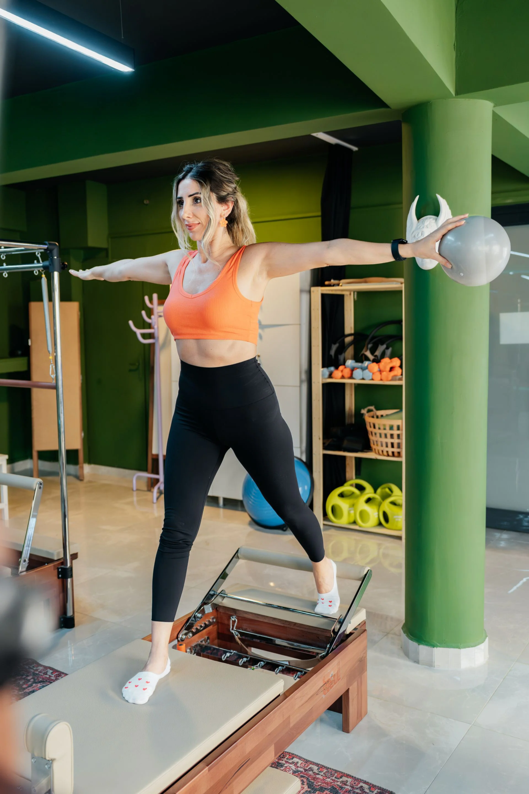

Imagem ilustrativa · não retrata o local ou a equipe
Imagem ilustrativa · não retrata o local ou a equipe01 / Pilates · Brunielle Batista
Renove o espaço do movimento na sua vida.
Studio Renovare. Pilates em Bady Bassitt, no Residencial Menezes. O Studio Renovare divulga aceitação de TotalPass e Gympass e recebe agendamentos pelo WhatsApp.
- Pilates
- TotalPass e Gympass
- Residencial Menezes
 Imagem ilustrativa · não retrata o local ou a equipe
Imagem ilustrativa · não retrata o local ou a equipe02 / Conheça a proposta
Pilates para fazer parte dos seus dias.
Pilates
A prática que dá nome ao estúdio e aparece nos conteúdos de alunos e atendimentos.
Pilates Funcional
Modalidade indicada na ficha do Studio Renovare no TotalPass.
TotalPass e Gympass
Benefícios divulgados no perfil do estúdio. Consulte planos elegíveis, horários e condições diretamente com a equipe.
 Imagem ilustrativa · não retrata o local ou a equipe
Imagem ilustrativa · não retrata o local ou a equipe03 / Trajetória & cuidado
Brunielle Batista. Studio Renovare.
Brunielle Batista se apresenta junto à marca Studio Renovare. O perfil reúne conteúdos sobre Pilates, a prática dos alunos e os serviços do estúdio. No Residencial Menezes, a unidade ocupa a sala 3 da Rua Natividade de Freitas Pereira, 150.
- Studio identificado com Brunielle Batista no perfil próprio
- Pilates Funcional listado no TotalPass
- Sala 3 no Residencial Menezes

Imagem ilustrativa · não retrata o local ou a equipe04 / Seu próximo passo
Vamos conversar?
Residencial Menezes · Bady Bassitt/SPConversar pelo WhatsApp ↗
Ver mapa do endereço +
Consulte horários, disponibilidade e condições pelo WhatsApp.
Pilates · Brunielle Batista